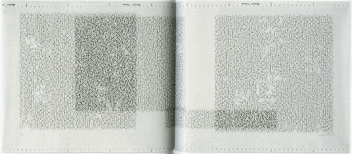
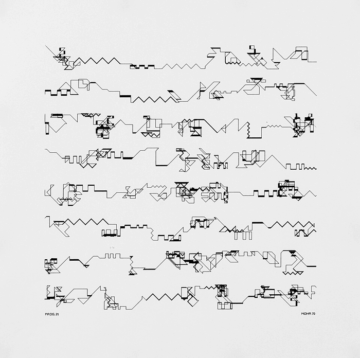
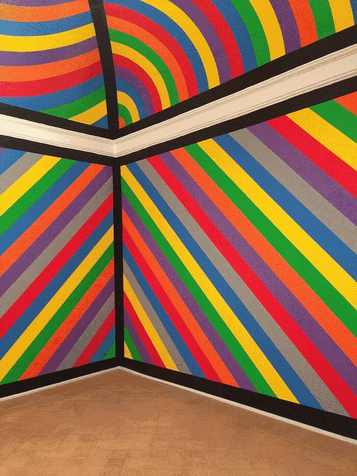
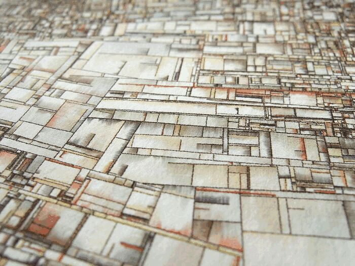

Creative code & generative art
Using the computer to make the image. Who to look at, from plotters
in 1965 to shaders. Notes for later, to try on a plotter or in
a sketch. Images from Wikimedia Commons, lightly reduced.
Disclaimer: list compiled with an AI model, from memory. Titles,
dates and attributions not all checked. Only the wikipedia links
were picked on purpose.
1960s–80s — the computer as a drawing machine

Interruptions à recouvrements
Vera Molnár · 1969
plotter drawing (?)
Started in 1959 with an «imaginary machine», real computer from 1968. Systematic variation, controlled disorder: «1% disorder» in grids of squares. Behaves like constructivist painting.
commons · wikipedia

Cubes & hypercubes
Manfred Mohr · P-021 series, 1970s (?)
algorithmic drawing
Rigorous, close to logic made visible. The cube is taken apart and recombined by rule, then pushed to higher dimensions.
commons · commons (P-306-O) · wikipedia

Wall drawings
Sol LeWitt · 1968 onward
instructions, executed by others
Not a coder. The work is the instruction; the drawing is whoever executes it. Conceptual ancestor of all of it.
commons · wikipedia
Also:
2000s — Processing generation

Substrate
Jared Tarbell · 2003
print
Cracks growing and stopping when they hit another. Defined the organic, growing look of early Flash/Processing art.
commons · complexification
- Casey Reas: co-creator of Processing. Process series: rules, the image emerges from behavior.
- Ben Fry: other half of Processing. More data as art (Genome Valence, All Streets).
- Robert Hodgin: particles, flocking, physics-based beauty.
- Marius Watz: abstract generative graphics, publishes sketches and process.
- Golan Levin: audiovisual instruments, art of the computer's eye.
- Lia: quiet, line-based minimal web art. liaworks.com
- Zach Lieberman: openFrameworks, School for Poetic Computation.
- Matt Pearson, Daniel Shiffman: teaching side (Nature of Code), essential.
Data as art
Art Blocks / fxhash era
- Tyler Hobbs: Fidenza, the best known. Essays on algorithmic composition and plotter work.
- Dmitri Cherniak: Ringers. Constraint and rule, sculptural variety.
- Matt DesLauriers: tools, plotter work, open-source teaching.
- Manolo Gamboa Naon (MGXS): Hypnagogic, color-poetic.
- Kjetil Golid: Archetype, layered line work.
- Emily Xie: Memories of Qilin, figurative and textural.
- Zancan, Snowfro, Harvey Rayner, Monica Rizzolli: to browse on Art Blocks.
3D, shader, real-time
Where to start
Todo
- pick one direction: rule-based abstraction, data, shader, painterly
- reproduce a Molnár grid with a plotter